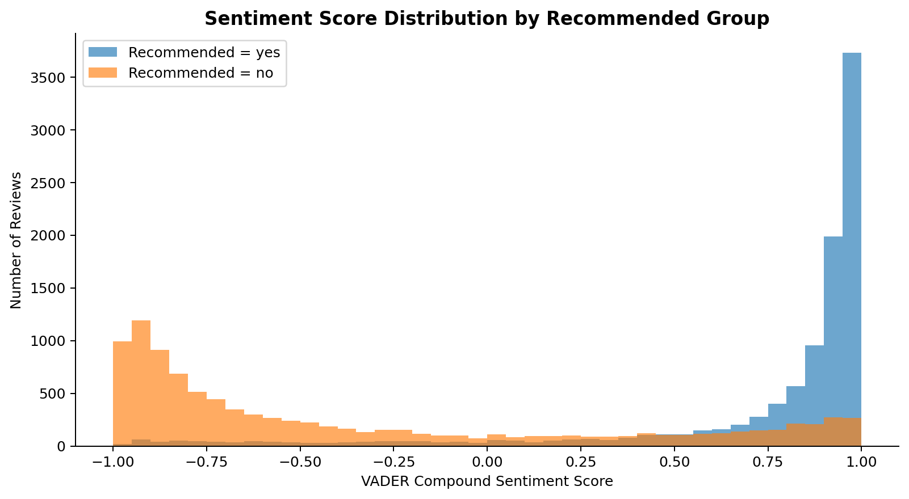

Member A：資料與前處理
負責資料清理、分層抽樣、tokens 欄位、token_count 與 EDA 圖表。
Airline Reviews Text Mining Final Project
Balanced Sampling Design
本專題先將 Airline Reviews dataset 依照 Recommended 欄位縮減為平衡資料集：yes 10,000 筆、no 10,000 筆，共 20,000 筆。Member B 使用同一份 sampled_20k_with_tokens.csv 完成 TF/TF-IDF、VADER sentiment analysis 與 LDA baseline。
負責資料清理、分層抽樣、tokens 欄位、token_count 與 EDA 圖表。
負責 TF/TF-IDF、VADER 情緒分析、LDA baseline、coherence score、manual topic interpretation。
負責 BERTopic、LDA vs BERTopic 比較、dashboard / presentation 整合。
讀取 sampled_20k_with_tokens.csv
使用 review_cleaned 做 TF / TF-IDF
使用 Review 原文做 VADER sentiment
使用 tokens 做 LDA topic modeling
輸出圖表、CSV、代表性評論與人工解釋表
TF / TF-IDF
TF-IDF 用於找出各群組較具代表性的詞，協助比較 Recommended = yes 與 Recommended = no 的語意差異。

通常偏向服務、舒適度、友善、良好經驗，例如 good、crew、friendly、comfortable、excellent。
通常偏向延誤、等待、客服、行李、票務與額外費用，例如 delayed、bag、ticket、customer service、worst、pay。
VADER Sentiment
VADER 使用 Review 原始文字計算 compound score，範圍為 -1 到 +1。

結果通常可用來說明：Recommended = yes 的情緒分數明顯高於 Recommended = no，且與 OverallScore 方向一致。
LDA Baseline
LDA 主要針對 Recommended = no 評論，找出 passenger complaints 的主題結構。


LDA 產生的是 topic-word distribution，不會自動理解主題名稱。因此本 dashboard 使用 output_2 的修正版：保留 topic_id、topic_size、top_words、representative reviews，不改模型結果，只根據 top words 與代表性評論提供更清楚的人工主題命名。
開啟 pyLDAvis 互動視覺化Representative Reviews
代表性評論用來驗證 topic label 是否合理，並提供報告中的質性解釋素材。